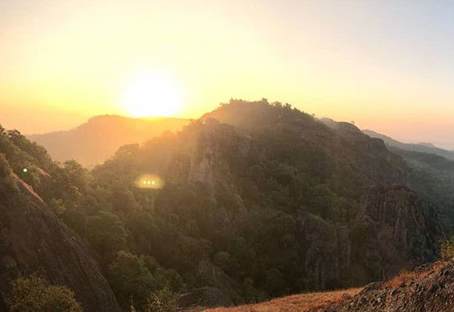

Aril Yudistira
Antonius Bagas Aril Yudistira, S.Kom.
Solo Hiking Puncak Gunung Api Purba
Gunung Api Purba Nglanggeran, Gunung Kidul ini secara fisiografis terletak di zona Pegunungan selatan jawa tengah – jawa timur. Dinamakan gunung api purba karena dulunya memang sejarah geologisnya termasuk dalam gunung api yang berumur kurang lebih 70 juta tahun yang lalu. Gunung ini memiliki ketinggian dari permukaan laut sekitar 700 mdpl. Kontur dinding yang curam (kemiringan 45 derajat).
Kalo kita bayangin mungkin gak terlalu tinggi dibandingkan dengan gunung-gunung lain di pulau jawa yang biasanya mempunyai ketinggian sekitar 1000 sampai 2000n mdpl, tapi lumayan curam untuk seorang amatir buat naik gunung seperti ku. Dan benar saja baru beberapa meter anak tangga di awal naik nafas ku sudah kembang-kempis.
Tips buat yang masih amatir dalam hiking kayak aku.: jalannya pelan-pelan aja, nikmati setiap view yang ada, pokoknya lupakan kalau lagi daki gunung – capek jadi gak berasa.
Jangan terlalu banyak bawa barang juga – tapi air minum itu harus ya. Dan atribut buat naik gunung juga harus bikin nyaman, minimal safety (pakai sepatu gunung – jangan sendal jepit dan celana kargo itu menolong banget buat gerak).
Jam menunjukan pukul 4.30 sore dan matahari mulai meredupkan cahayanya, dan kaki ini sudah mulai terasa berat untuk melangkah naik, tapi banyak keseruan saat hiking menuju puncak adalah di beberapa titik akan kita jumpai celah sempit menuju ke atas yang merupakan salah satu jalur pendakian.
Tapi jangan khawatir, track-nya aman buat pemula. Hanya saja buat yang fobia ruang sempit (claustrophobia) disarankan untuk menempuh jalur lain yang lumayan aman. Bagi ku sih lebih seru menyusuri celah sempit menuju puncak gunung api purba yang ini. Karena aku kurus, haha dan jarang ditemui kondisi track yang lumayan bagus seperti ini.
Ada beberapa hal yang membuat ku prihatin salah satunya Sampah, Sampah dan lagi-lagi Sampah!, selalu saja ada sampah di setiap pendakian, what wrong with you guys ?!
Di awal kita memang di minta uang untuk pemeliharaan kawasan wisata sebesar Rp10.000 per kepala. Tapi jangan merasa kalian sudah bayar dan kemudian berlaku seenaknya dengan membuang sampah sembarangan di gunung atau tempat wisata lain, tidak sulit kok membawa pulang turun sampah kalian sendiri.
Sorry ya malah jadi kesel haha.. yok kita lanjut, Hampir 1 jam hiking dan sesekali berhenti untuk mengatur nafas, yah maklum gak sering naik gunung dan olahraga jaditrack kali ini lumayan bikin kewalahan hahaha...
Cuma seperti ku bilang di awal kalau di beberapa titik saya sangat enjoy dengan track yang berupa celah sempit dan di akhir menuju puncak kita akan sedikit merambat naik untuk bisa sampai di posisi puncak gunung
Cukup waktu 1 jam 45 dan .... I am at the top of the mountain.
Lelah saya terbayar ketika sampai di puncak, di kanan nampak dari jauh embung nglanggeran, sebuah kolam buatan yang keren banget, dan di seberang sana, terlihat puncak lain gunung api purba. Saya duduk merenung dan menikmati semua pemandangan yang di sajikan alam, Angin sore yang berhembus sejuk, dan langit luas berwarna jingga, menandakan matahari mulai memejamkan matanya di tanah air tercinta.

Tertiup bayu…
Sayup-sayup hidup,
Di memori kelu
Ingatan lalu
Yang kupaksa berlalu
Hilang dalam memori berdebu
Hening mendayu di ritme waktu
Karna dirasa sudah mulai Baper , mengenang masa lalu, dan keinginan untuk mengajak si dia ke tempat ini, akhirnya aku memutuskan untuk segera turun setelah menikmati sunset di punjak. Mengingat hari mulai gelap, dan jarak pulang ke jogyakarta lumayan jauh, aku mempercepat langkah ku, dan rupanya perjalanan turun lebih cepat dan tak terlalu melelahkan dari pada muncak tadi menurutku, aku hanya berenti sekali ketika turun, untuk mengambil senter, dan meneruskan perjalanan, butuh waktu 1 jam untuk turun. setelah di bawah aku memutskan segera ke parkiran, mengambil motor, dan langsung meluncur pulang.
Mungkin untuk pendaki ataupun pengunjung akan ku tegaskan dan mungkin akan terus ku tegaskan dalam setiap tulisan ku.. Jaga alam kita, berhenti buang sampah di gunung maupun di manapun itu.
Memang hal-hal seperti di atas perlu banget untuk diingatkan kepada setiap pengunjung. Seperti kita tahu, kalau bukan kita siapa lagi yang menjaga alam kita.
Terakhir tetep enjoy di setiap kita berada di gunung ataupun tempat wisata lainnya, untuk ku pribadi alam adalah tempat menenangkan pikiran, merenung, dan Berdoa untuk menghilangkan semua penat dan emosi negatif yang ku pendam.
Namun pastinya kita menikmati wisata itu dengan cara kita masing-masing.Salam lestari untuk negeri. Semoga bermanfaat.